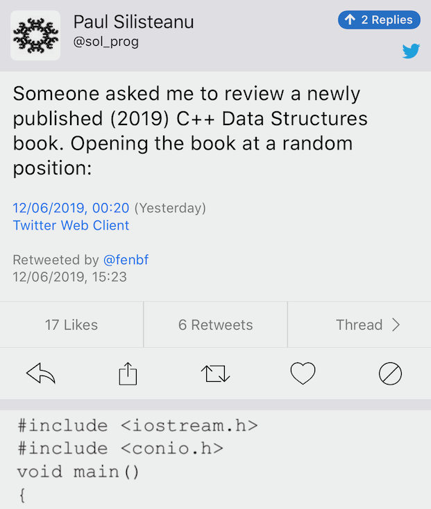
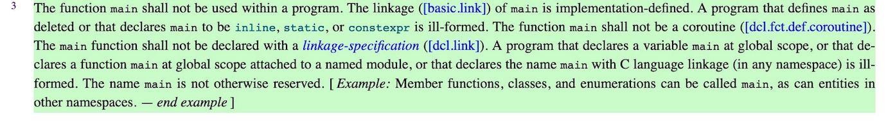

2019-06-13
In programming, some people deem imperative, object-oriented, and functional programming different paradigms. I think the very notion of a paradigm does harm to use and to design because people all too easily fall into the trap of considering only one paradigm “good” and then try to fit everything into it, discarding all aspects of alternative “paradigms” as wrong or inferior (aka “If your only tool is a hammer, everything looks like a nail”).
http://cppcast.com/2019/06/michael-park/
P1371: Pattern Matching http://wg21.link/p1371r0
https://www.client-server.com/blog/2019/06/the-story-bloomberg-senior-developer-elliot-goodrich
I don't think C++ is dying by any stretch of the imagination.
https://www.reddit.com/r/cpp/comments/bw8fyu/interesting_interview_on_client_servers_blog_with/
https://www.reddit.com/r/cpp/comments/by60wx/modern_c_authors_and_books/

enum Foo {FooBar, FooBaz};
template<Foo foo>
struct Test {
Kind kind{foo};
};
int main() {
Test<FooBar> fooBar;
assert(fooBar.kind==FooBar);
}https://github.com/tcbrindle/numeris_romanis
https://www.reddit.com/r/cpp/comments/bxiqmm/numeris_romanis_roman_numeral_support_for_c17/
Unrelated: What are the rules about using an underscore in a C++ identifier?
Each name that begins with an underscore is reserved to the implementation for use as a name in the global namespace.
https://developers.redhat.com/blog/2019/04/12/understanding-when-not-to-stdmove-in-c/
GCC 9:
Example:
GCC 9:
Example:
struct T {
T(const T&) = delete;
T(T&&);
};
T fn(T t) {
return std::move(t); // Redundant: move used implicitly
}When std::move makes sense:
Explanation:
When a function returns an object whose type is a class derived from the class type the function returns. In that case, overload resolution is performed a second time, this time treating the object as an lvalue.
Also: No more leaks with sanitize flags in gcc and clang
A variadic, completion-based future class for C++17
https://github.com/FrancoisChabot/variadic_future (Apache 2.0)
https://lethalguitar.wordpress.com/2019/05/28/re-implementing-an-old-dos-game-in-c-17/
Code: https://github.com/lethal-guitar/RigelEngine
Duke Nukem II: https://en.wikipedia.org/wiki/Duke_Nukem_II
Reddit:
Also: https://osgameclones.com/
Shafik Yaghmour:

Shafik Yaghmour:
https://solarianprogrammer.com/2019/05/09/cpp-17-stl-parallel-algorithms-gcc-intel-tbb-linux-macos/
Threading Building Blocks (TBB) https://www.threadingbuildingblocks.org/
GitHub: https://github.com/intel/tbb (Apache 2.0)
Since 2018 U5 TBB binary packages include Parallel STL as a high-level component.
Parallel STL: https://github.com/intel/parallelstl (Apache 2.0)
Melinda Varian:
The best programs are the ones written when the programmer is supposed to be working on something else.